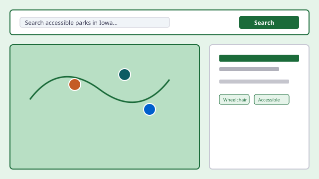

Accessible Parks Search for Iowa

Overview
Park Explorer is a public, accessible website that helps people find parks across Iowa, explore amenities, and understand accessibility features before they visit. Whether you are looking for playgrounds, paved trails, accessible restrooms, or sensory-friendly spaces, the app makes it simple to discover parks that fit your needs.
The live demo tagline: “Discover Local Parks — find parks across Iowa, filter by amenities and accessibility features, and plan your next outdoor visit.”
Try the Live Demo
Explore the working application on Netlify. The home page includes keyword search, featured parks, and quick filters by amenity. The parks directory adds multi-select filters for both general amenities and accessibility-specific features.
Problem
Accessibility information for parks is often difficult to locate across multiple websites and resources. Visitors may not know whether a park offers paved pathways, accessible restrooms, or adaptive play equipment until they arrive.
Solution
I designed Park Explorer as a centralized search experience where users can discover outdoor spaces throughout Iowa, filter by the features that matter to them, and review accessibility details before planning a visit.
Key Features
- Keyword search for parks by name or topic
- Featured parks on the home page with amenity and accessibility summaries
- Browse-by-amenity shortcuts (trails, restrooms, playgrounds, accessible paths, and more)
- Multi-select filters on the parks directory for amenities and accessibility features
- Accessibility filters including wheelchair access, paved pathways, accessible parking and restrooms, adaptive play equipment, sensory-friendly areas, and shaded seating
- Keyboard-accessible search, filters, and navigation throughout the app
- Design-token system enforcing contrast, focus indicators, and 44px touch targets
Featured Parks in the Demo
The live app highlights Iowa state parks such as:
-
Backbone State Park
Strawberry Point, IA — trails, restrooms, picnic areas, and three accessibility features.
-
Ledges State Park
Madrid, IA — trails, restrooms, picnic areas, and two accessibility features.
-
Maquoketa Caves State Park
Maquoketa, IA — trails, restrooms, picnic areas, and three accessibility features.
-
Pikes Peak State Park
McGregor, IA — trails, restrooms, picnic areas, and three accessibility features.
Design Iteration
During a course design review, Professor Aaron Yang noted that the park detail page stacked About, Amenities, Accessibility, and Hours as separate full-width cards, which required excessive scrolling before visitors could reach the map and directions.
I refactored those blocks into a single compact container with two multi-column rows: About and Hours on the first row, Amenities and Accessibility on the second. On smaller screens the layout stacks to one column while preserving semantic headings, WCAG 2.2 AA contrast and focus styles, and 44px touch targets on interactive elements.
A follow-up review of the All Parks page noted that the filter sidebar consumed too much
space on mobile. I hid filters behind a toggle button with a hamburger icon (similar to
retail filter patterns), opening a slide-in panel with aria-expanded,
backdrop dismiss, Escape key support, and a visible Close control.
Accessibility Approach
Park Explorer is built to meet WCAG 2.2 Level AA. The project uses a token-based design system for consistent contrast, visible focus rings, scroll margins that keep focused controls clear of the sticky navigation, and reduced-motion support. Status is never conveyed by color alone.
Read the Park Explorer accessibility statement (opens in new tab)
Technologies Used
- React
- JavaScript
- CSS
- Design Tokens
- WCAG 2.2
What I Learned
- Accessibility-first design with a token system that encodes WCAG requirements
- Information architecture for amenity and accessibility metadata
- Search and filter experience design for diverse visitor needs
- Iterating on information density from professor feedback without sacrificing accessibility
- Documenting conformance with a dedicated accessibility statement
Future Enhancements
- Integration with real-time trail condition updates
- User-submitted accessibility reviews and photos
- Offline access for users in areas with limited connectivity
- Expanded coverage beyond Iowa state parks
- Accessible alternatives for third-party map embeds and linked PDFs
Project Links
Live Demo: Park Explorer (opens in new tab) GitHub Repository Placeholder